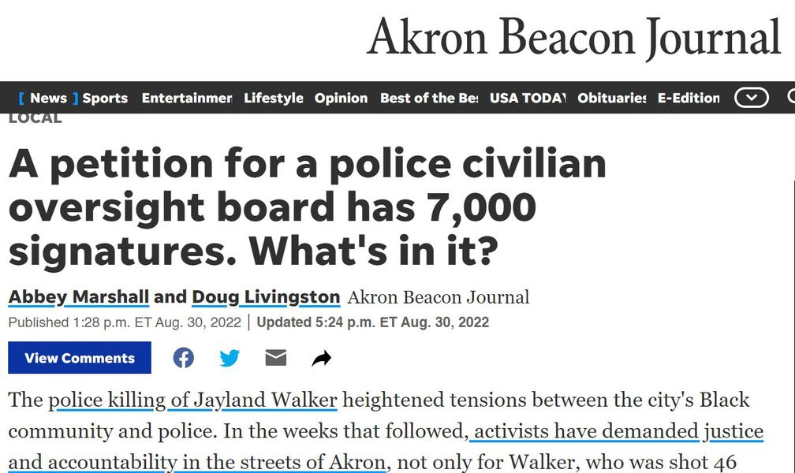

Timeline photos
I am SO thankful for the likes of @[100250651513594:274:The Freedom BLOC], Naacp Akron Black Elected Officials of Summit County, some members of city council and some clergy for making this ballot initiative happen.
WE MUST HAVE A CIVILIAN OVERSIGHT BOARD FOR @[100064622113875:2048:Akron Police Department]. It is the only logical solution.
This will likely be on the November ballot. PLEASE PLEASE PLEASE come out and vote for this. This is democracy in action.